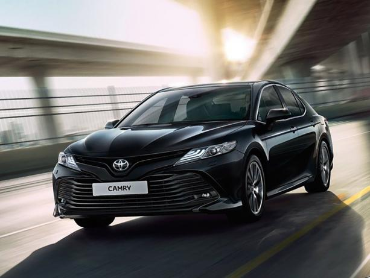

В 1924 году Сакити Тоёда изобрел автоматический ткацкий станок Тойода модель G. Принцип дзидока, означающий, что машина останавливается сама, когда возникает проблема, стал позже
частью производственной системы Тойоты. Ткацкие станки собирались на небольшой производственной линии. В 1929 году патент на автоматический ткацкий станок был продан британской компании,
полученная от продажи сумма стала стартовым капиталом для развития автомобильного производства.
В 1929 году Киитиро Тоёда, сын Сакити Тоёды, совершил поездки в Европу и США для изучения автомобильной промышленности и в 1930 году приступил к разработке автомобилей с бензиновым двигателем.
В 1933 году компания по производству автоматических ткацких станков Toyoda Automatic Loom Works создала новое отделение, специализирующееся на производстве автомобилей; его руководителем стал
Киитиро Тоёда[6]. Правительство Японии всячески поощряло такую инициативу компании Toyoda Automatic Loom Works. В 1934 году компания произвела свой первый двигатель типа А, который был использован
в первой модели легкового автомобиля А1 в мае 1935 года и в грузовике G1 в августе 1935 года. Производство пассажирского авто модели АА началось в 1936 году. Ранние модели напоминали уже
существовавшие модели Dodge Power Wagon и Chevrolet.
Toyota Motor Co., Ltd. была основана в качестве самостоятельной компании в 1937 году. Несмотря на то, что фамилия основателей компании звучит как Тоёда, для упрощения произношения и в
качестве символа отделения деловой деятельности от семейной жизни, компании было решено дать имя «Тоёта». В Японии название «Тоёта» (トヨタ) считается более удачным названием, чем «Тоёда»
(豊田), так как 8 считается числом, приносящим удачу, а слово «Тоёта», написанное катаканой, как раз состоит из 8 черт.
Во время Второй мировой войны компания практически занималась только производством грузовиков для Японской императорской армии. Из-за скудной ресурсно-сырьевой базы и острого дефицита сырья
для производства узлов и агрегатов военной техники в Японии того времени военные грузовики делались в самых упрощенных вариантах, например, с одной фарой. Некоторые исследователи считают, что
война для Японии быстро закончилась из-за американских бомбардировок производственных мощностей заводов «Тойота» в городе Аити.
После войны в 1947 году начался выпуск коммерческих пассажирских авто модели SA. В 1950 году была создана отдельная компания по продажам — Toyota Motor Sales Co. (она просуществовала до июля 1982 года).
В апреле 1956 года была создана дилерская сеть Toyopet. В 1957 году Toyota Crown стал первым японским автомобилем, экспортируемым в Америку (не только в США, но и в Бразилию).
Тойота начала расширяться быстрыми темпами в 1960-е годы. Первый автомобиль марки «Тойота», произведённый за пределами Японии, вышел с конвейера в апреле 1963 года в городе Мельбурн, в Австралии.
В самой Японии автомобили данного производителя являлись самыми продаваемыми. Так, в 1992 году на долю Тойоты приходилось 40 % машин, принадлежавших населению.
Toyota Motor является крупнейшим автопроизводителем в мире в 2007—2009 годах и с 2012 года удерживает это звание.
В I квартале 2007 года Toyota впервые выпустила и продала больше автомобилей, чем General Motors (GM). GM удерживала звание «крупнейшего автопроизводителя в мире» на протяжении 76 лет.
Но последние годы GM, как и другие американские автопроизводители, переживала кризис и вынуждена была сокращать производство — освободившееся место на рынке занимают конкуренты, и в первую очередь
Toyota. 24 апреля японская компания сообщила, что выпустила в I квартале 2,37 млн автомобилей и 2,35 млн продала. Таким образом, она впервые опередила GM, у которой соответствующие показатели
составили 2,34 млн и 2,26 млн машин.
2009 финансовый год компания завершила с убытками, этого не было с 1950 года.
В мае 2012 года Toyota вновь вырвалась на первое место, обогнав Volkswagen и General Motors.
В 2013—2015 годах марку Toyota признают самым дорогим автомобильным брендом в мире (несмотря на то, что за 2014 год стоимость бренда снизилась на 2 %).
